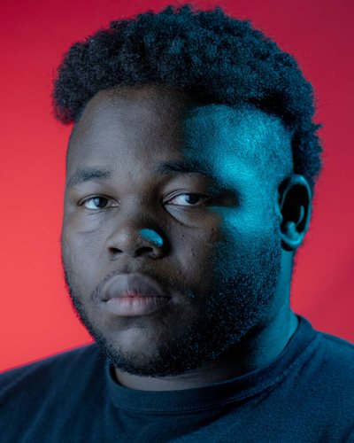

About
Behind the camera.
Hey, I'm Kenneth, based in Orlando, Florida. I've always loved storytelling, and it comes from my curiosity. I like asking questions, finding the why, and telling it in a way that's beautiful and my own.
I've spent the last few years on both sides of the switcher: video editor for Doctorly (3.4M subscribers, 3M+ views per episode), technical director and video director for Hope Channel's international live broadcasts (80K+ concurrent viewers, three Sony FX3s with operators plus a Sony FX6), production assistant at It Is Written, videographer and later AV support at Camp Kulaqua over four summer seasons, and camera operator and audio engineer for Forest Lake Church's services. At Southern Adventist University's School of Journalism & Communication I edited, ran the switcher, managed the studio and engineered audio.
I care about the boring parts too (backups, deadlines, clean audio) because that's what makes the creative parts land.

Where I'm headed
Technical direction in sports.
My goal is to become a technical director in sports. I do my best work under pressure, and that's where a TD lives. I love cameras, and running several at once is my kind of fun. Sports never follow a script, and staying ready for the unexpected is exactly what keeps me hooked.
Education
B.S. Mass Communication, Media Production, Southern Adventist University, Collegedale, TN (2024). Video production, multi-camera directing, post-production, audio engineering and media strategy.
Experience
- DermCollective / Doctorly: Video editor 2024 to 2025
- Forest Lake Church: Audio visual specialist: camera operator for both services, broadcast & front-of-house audio 2023 to present
- It Is Written: Production assistant 2023
- Hope Channel: Live broadcast technical director and video director (three Sony FX3s with operators, one Sony FX6, lighting and audio) 2022 to 2024
- SAU School of Journalism & Communication: Video editor, technical director, studio manager & audio engineer 2022 to 2024
- Camp Kulaqua: Summer seasons. Videographer 2019 and 2022; Special Services (AV support: audio, LED walls, lighting) 2024 and 2025 Summers 2019 to 2025
Gear & tools
- Sony Cinema
- Blackmagic
- Canon
- Premiere Pro
- DaVinci Resolve
- Final Cut Pro
- Audition
- Adobe Creative Suite
- Live switching
- Live audio mixing
- Color grading
- Lighting & AV setup
- LED walls
My own kit
- Sony a6700
- Tamron 17-70mm f/2.8
- Sigma 18-35mm f/1.8
- Canon 50mm f/1.8
- DJI Mini 3 drone
Experience with
- Doctorly
- DermCollective
- Hope Channel
- It Is Written
- Camp Kulaqua
- Forest Lake Church
- Southern Adventist University
Let's create something together.
Live shows, shoots, edits: tell me what you're making and when it needs to be ready.